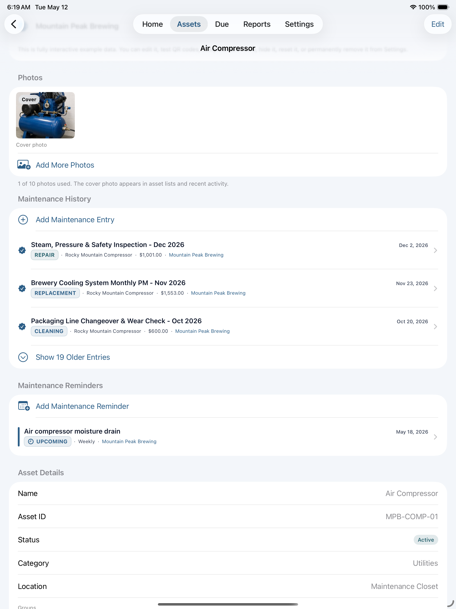
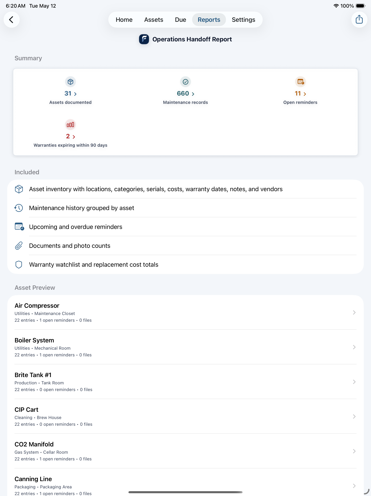

iPadHome
Status bar, needs attention, out-of-service alerts, and warranty watch.

Pick your business type when you add assets and FixLog suggests 40–60 relevant templates with pre-filled reminders and custom fields. No enterprise setup. No bloated system.
FixLog works on iPhone and iPad in light or dark mode, wherever maintenance actually happens.
Status bar, needs attention, out-of-service alerts, and warranty watch.
Asset list with equipment photos, location, and last service date.

Overdue, upcoming, and later tasks organized by priority.

Operations report with health score, trend chart, and cost watchlist.

Full asset record with photos, maintenance history, reminders, and specs.

Handoff report with full asset inventory and maintenance records, ready to export.

263 templates across 21 business types. Pick your type and get relevant assets pre-loaded with suggested reminders and custom fields like capacity, pressure ratings, and service intervals.
Generate QR labels for any asset. Stick the label on the equipment and anyone on the team can scan it to open the service record instantly without searching.
Flag assets as Out of Service and they surface on your home screen immediately. No more walking into a shift to find broken equipment nobody mentioned.
Log costs on every maintenance record and track spend over time by location, vendor, maintenance type, asset value, and replacement exposure.
Operations Maintenance Report with health score, trend chart, and watchlist. Warranty Countdown, Maintenance History, and a full Operations Handoff Report for ownership transitions.
Create separate Spaces for different locations, departments, or properties. Switch between them with a tap. Each Space keeps its own assets, history, and reminders separate.
Log warranty dates for every piece of equipment. Attach manuals, inspection reports, invoices, and warranty PDFs directly to the asset. Always there when you need them.
Record what was done, when, by whom, and at what cost. Every completed reminder creates a history entry automatically. Export to CSV for audits or insurance.
Generate a complete operations packet for ownership transitions, new managers, or due diligence. Includes asset inventory, maintenance history, warranty status, and open reminders.
No Enterprise Setup
Most CMMS tools require implementation projects, IT involvement, and ongoing subscription costs. FixLog is a private app you download, set up yourself, and own outright for a one-time purchase.
Private by Design
No cloud account required. No data shared with third parties. Your service history, costs, and records stay private. Export backup files on your own schedule.
Get Started Today
FixLog Pro is a one-time $39.99 purchase. Download free and explore with a fully populated brewery example before you buy.